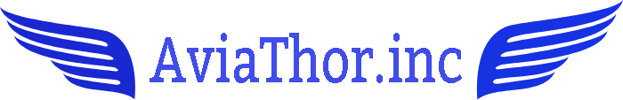
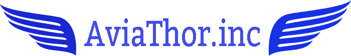

L’avenir est plein de surprises et nous chez AviaThor, nous
avons pris de l’avance par rapport aux autres compagnies
aéronautiques. On a une vision du futur très différente des
autres et c’est cela qui nous démarque d’eux. Nous sommes fiers
de présenter la nouvelle série d’avions qui sortiront en 2020.
Doté d'une très grande performance de vitesse, de sécurité et
d'économie d'energie. Nous offrons pour la première fois au
grand publique. Les avions du futur avec AviaThor.
On vous invite à assister à la démonstration de notre tout
nouveau VX-130 et aussi du TRX-250. Les billets sont deja en
vente seulement sur place alors ne tardez pad a vous procurez
les votres. C'est une sortie en famille que vous n'allez pas
oublier c'est garantie. Pour plus d'amples information la
section "programme" et "appareils" vous donneras un plus gard
avant gout de ce que vous reserve AviaThor par rapport a nos
pilotes et appareils.
 
